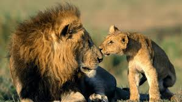

People of Gir

Gir Forest National Park and Wildlife Sanctuary, also known as Sasan-Gir, is a wildlife sanctuary and protected forest area in Gujarat, India. It is considered one of the most important protected natural areas in Asia due to the rare animals living here, particularly the pure Asiatic Lions (Panthera leo persica).
The sanctuary lies in the peninsula of Gujarat that is India's south-western part with terrain that has low hills, is rugged and filled with mixed deciduous trees.
Land is rugged with the deepest ravines, rocky hills that are steep, rivers aplenty and those are interspersed with big grassland patches. Major attractions of the place are Asiatic Lions, The bird Sanctuary that houses more than two hundred species of birds, Temple of TulsiShyam and breeding farm of Crocodiles that is nearby Sasan. A combination of crocodiles, Pygmy woodpecker, Chital, Leopard and many more such animals make this place come alive. There is also a conflict between the officials responsible for protecting the forest and villagers who collect non-timber forest produce perpetually. By virtue of it being a biosphere reserve, there are stringent rules and regulations in Sundarbans that put restrictions on collection of NTFP. These restrictions are of various kinds, and apply on the number of issued permits as well as permitting entry only to the buffer area of the Sundarbans Tiger Reserve. However, in certain cases such as honey gathering, fishing and crab fishing, which typically involve animals, relaxations have been made in the rules. -->
In general, collection of such forest products are dependent on specific areas—they are predominant in the eastern part of the biosphere reserve. Villagers face threats from man-eating tigers and crocodiles. --> Villagers don’t even have any insurance policies, and claim for compensation is also a lengthy process. In case of incidents that happen inside the core area, they cannot claim compensation. The core zone is strictly banned for the collection of forest products. However, due to unsustainable harvesting and collection of the riverine species, their population in the buffer zone has gone down considerably, because of which the villagers have no option left but to enter the core zone. They take this risk to find resources for their survival and have often fallen victim to human-animal conflict.